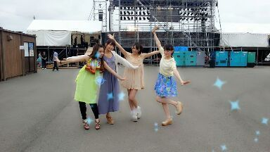

| 2013/07 17 Wed | 川村真洋 えーとーぅ、皆さんの好きなドレ ッシングは何ですかーーー(・∨ ・)☆？？〜 ろってぃ- |
は---い☆
皆さん こんにちわ- =・ω・=
ろってぃ-だよ〜 )))
Hello ！！ ルンルン♪
昨日は 『NOGIBINGO』の収録でした！
いろいろ撮ってきたよん♪ヽ(´▽｀)/
収録では、今考えても おキモチが
『オエェ (￣□||||！！』ってなること
やってきたよ... 。
頑張りましたよん あはん♪
でも 本当に収録
最高に楽しかったよーー＼(^o^)／
皆さん 乃木どこを見て
コメントたくさんしてくださり
ありがとうございます=・ω・=
全部 すみからすみ まで
読んだよ アハハハ〜(ノ´∀｀*)わら
うれしゅうキモチっ♪
そして今日は 乃木坂ってどこ？の
収録でした (^^)
またオンエアされるので
見てくださいね/
秋田 ステージ裏で
ハイッ ポーズっ (〃ω〃)/

左から まひろ,まいまい,ひな,かな。
ではでは 質問返しいきます！
☆夏の上手な乗り切り方？
★夏は動きやすい格好がいいよ/
バッグの中に 扇子orウチワ 入れとく/
外を歩いてる時
「 あついよぉ〜(;´д｀)」ってなったら
自販で飲み物買って
いっき飲みで少しでも体温下げる！！！
後は 頑張る！
☆「扇風機」は歌うの難しいですか？
★難しくないよぉ〜(^^)
乃木坂の曲って低くて
上手に出すの難しかったりするんやけど扇風機は 歌いやすいよん♪
☆「扇風機」で頭の上で指動かしてる振り付けってど-ゆ-意味なの？
★あれはねぇ〜
「心がザワザワしてる〜♪」の
ザワザワを指で可愛く表してるんだお。あは
☆ろってぃ-なまはげ見れた？
★ぃゃぁ〜...
見てないやねぇぇ(´；ω；｀)
☆俺のこと覚えてるか？
★忘れるわけないやろー(>_<)/
☆バンドやってたんよね？
★本当ちょっとらけね(*^^*)
☆携帯ケース、それってオーダーメイド？
★これ、オーダーメイドじゃないんよ^^
たまたま 自分にぴったりなカバーを
見つけた訳よっ/ ウシシシ わら )))
☆夏のliveツアーはプリンシパル的なこと
するのかな？
★夏のliveは 本当にliveだから
プリンシパル的なことはないよん(´▽｀)/
☆ろってぃ-は生プロの生田社長から
ひじモデルのスカウト受けたことありますか？
★ひじモデル！？笑
ないっす ...。(TT)ノ
☆秋田県で綺麗な星空見れたぁ？
★天気が悪くてね めちゃ曇ってて
見れなかったの (´；ω；｀)
☆ろってぃ-は乃木坂の曲で
客観的に見て
好きな曲 ３曲選ぶとしたら
何がいい？
★『 狼に口笛を 』
『 涙がまだ悲しみだった頃 』
『 左胸の勇気 』
とか本当にいい曲だと思います(*^^*)
わりと他のメンバーもこう答える人
いると思うなっ♪/
シングルでも 『 君の名は希望 』
『 制服のマネキン 』
など色々あるよーー＼(^o^)／
☆キリタンポ、暑いのに鍋って
大丈夫でした？
★全然大丈夫でしたよ( ´∀｀)
秋田県全員暑くなくって
夜は肌寒い位でしたよん♪
☆キリタンポを食べた感想は？
★もちもちしてあったかくて
食べてて和みました。
本当 美味しかったよ(ω)
シンプルなお料理で
具はキリタンポとネギだけみたいな
感じなの！ 少し鶏肉も入ってた^^
ネギもまひろ大好きだからねっ/
んっぱぁ〜〜\(〃∨〃)/
Rotty☆でした のしっ)))